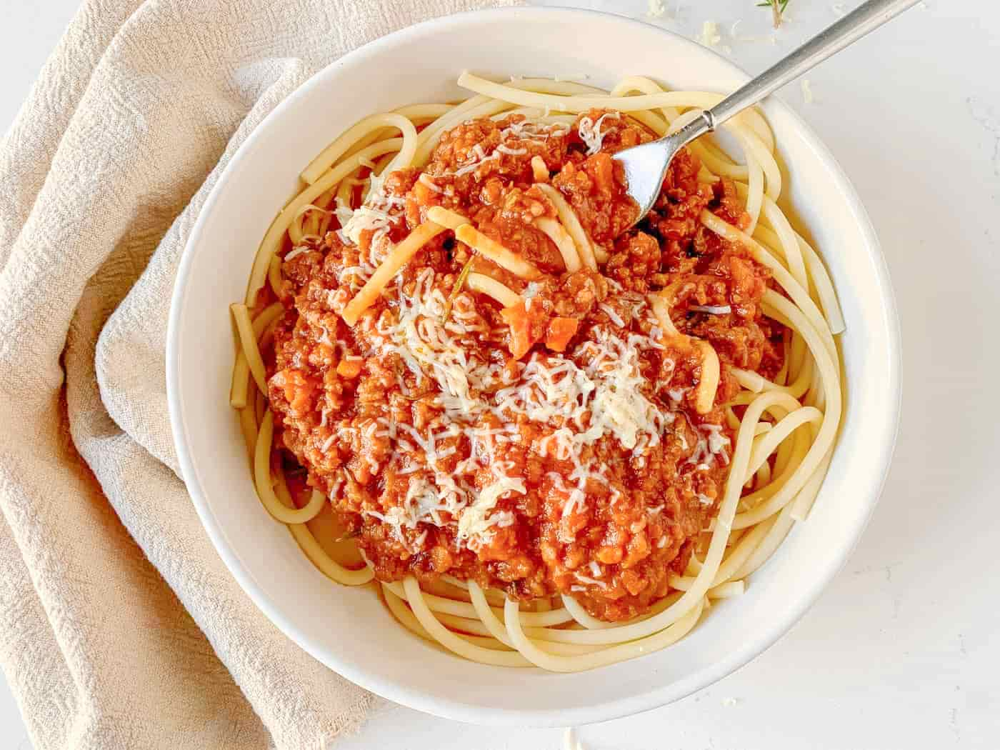

Simple Dinner Recipes
Easy and quick dinner ideas you can make at home. Simple meals that taste great!
Spaghetti Bolognese
Ingredients:
- 400g spaghetti
- 1 tablespoon olive oil
- 1 onion, chopped
- 2 garlic cloves, chopped
- 500g ground beef
- 1 can (400g) crushed tomatoes
- 1 tablespoon tomato paste
- 1 teaspoon dried oregano
- Salt and pepper
- Grated cheese (optional)
Instructions:
1. Heat oil in a pan. Cook the onion and garlic for 3 minutes until soft.
2. Add the ground beef and cook until brown.
3. Add the tomatoes, tomato paste, oregano, salt, and pepper. Simmer for 15 minutes.
4. Cook the spaghetti according to the package. Drain the water.
5. Serve the sauce on the spaghetti. Add cheese if you like.
Chicken Stir-Fry
Ingredients:
- 2 chicken breasts, sliced
- 1 tablespoon olive oil
- 1 red bell pepper, sliced
- 1 cup broccoli
- 2 garlic cloves, chopped
- 2 tablespoons soy sauce
- 1 tablespoon honey
- Rice or noodles
- Salt and pepper
Instructions:
1. Heat oil in a pan. Cook the chicken until brown.
2. Add the vegetables and cook for 3 minutes.
3. Add garlic and cook for 1 minute.
4. Add soy sauce and honey. Stir well and cook for 2 more minutes.
5. Serve with rice or noodles. Enjoy!
Veggie Tacos

Ingredients:
- 8 small tortillas
- 1 can (400g) black beans
- 1 avocado, sliced
- 1 cup lettuce, chopped
- 1/2 cup shredded cheese (optional)
- 1/2 cup salsa
- 1 tablespoon olive oil
- 1 teaspoon cumin
- Salt and pepper
Instructions:
1. Heat oil in a pan. Cook the black beans with cumin for 5 minutes.
2. Warm the tortillas in a dry pan for 1 minute on each side.
3. Fill the tortillas with beans, avocado, lettuce, and cheese.
4. Top with salsa and enjoy your tacos!